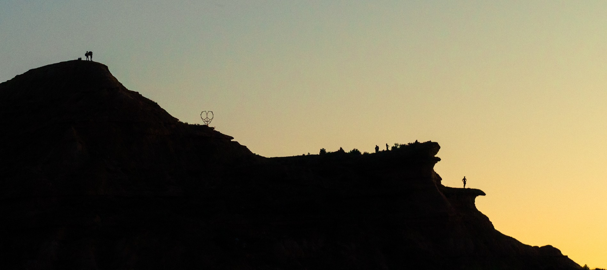

MOOWS / Issue 01 · August 2026
A shepherd’s hut

once sheltered sheep
now, cows stew tea, sing songs
pray for pelting rain to leave
MOOWS / Issue 01 · August 2026

once sheltered sheep
now, cows stew tea, sing songs
pray for pelting rain to leave